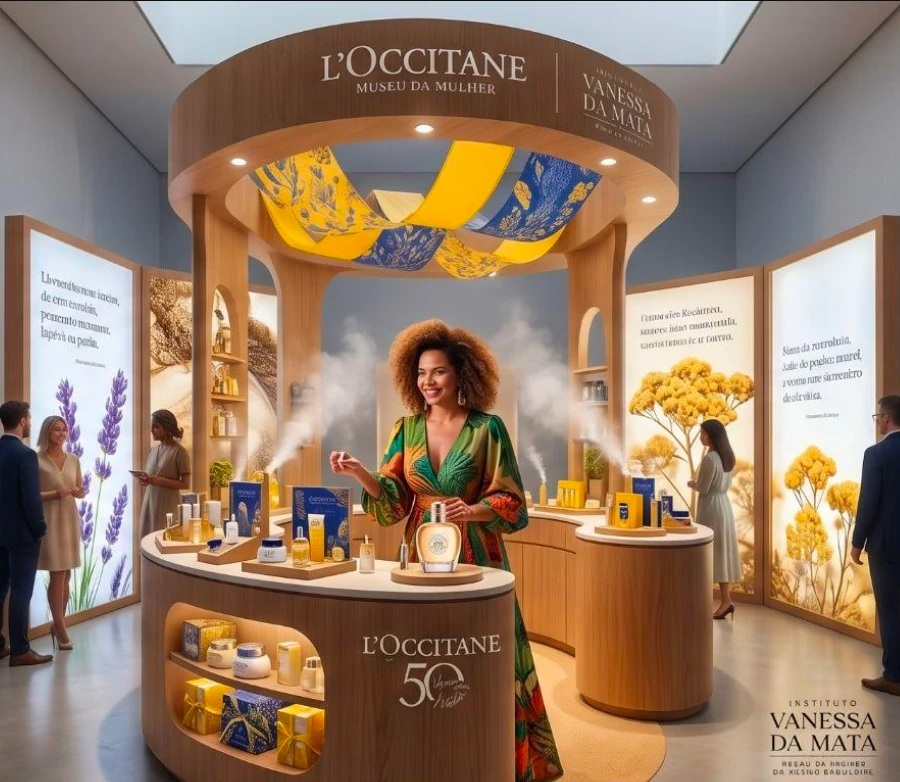

Proposta exclusiva
Patrocínio master de 5 anos
Instituto Vanessa da Mata
Museu da Mulher
da Música Brasileira
Uma proposta para a L’Occitane en Provence celebrar seus 50 anos com um legado que permanece por décadas.
A força de um ícone
contemporâneo em números
+5 mi
ouvintes mensais no Spotify
+2,5 mi
seguidores nas
redes sociais
+120 mil
visitantes estimados
por ano
85%
perfil feminino e
formadores de opinião
20+ anos
de carreira com
reputação ilibada
Comunidade Vanessa da Mata: público fiel, maduro e de alto poder de consumo, conectado à cultura, moda, brasilidade e sustentabilidade.
15 mi
Comunidade do Instituto · ano 1
impactos digitais estimados
50
anos de L’Occitane en Provence
Meio século de história merece um legado à altura
Um marco que vira legado
A marca está completando 50 anos. Patrocinar a casa das matrizes da música brasileira transforma a celebração em algo que permanece por décadas.
Duas trajetórias atemporais
Desde 1976, a L’Occitane leva a natureza e o saber-fazer de Provence ao mundo. Vanessa constrói há mais de 20 anos uma carreira de reputação ilibada.
Um público em comum
85% do público de Vanessa é feminino e formador de opinião, com alto poder de consumo e conexão com cultura, brasilidade e sustentabilidade.
A entrada da marca
A entrada da L’Occitane no projeto
Cota Máster por 5 anos, com presença em todos os pontos de contato, nos materiais digitais e nos eventos corporativos.
Nome da marca no complexo e nos espaços, do casarão ao Jardim e Café, presente em toda a comunicação do Instituto.
Espaço próprio da marca dentro do complexo para experimentação, encontros e lançamentos ao longo da parceria.
Gancho de lançamentoOs 50 anos da L’Occitane abrem a parceria, com anúncio, single e pop-up no mesmo momento.
Experiência
Como a experiência acontece na prática
O visitante caminha por um casarão histórico cercado de jardins. O som ambiente traz rascunhos inéditos de “Boa Sorte”. Nas paredes, os vestidos das turnês mundiais ganham luz de galeria. Uma projeção 360° conecta a escrita de Vanessa às vozes de outras personas brasileiras que fazem ou fizeram parte da sua trajetória, ligando sua história a matrizes da cultura nacional. Na saída, café no Jardim L’Occitane e vinil exclusivo na loja.
01
Sala imersiva 360°
Iluminação e projeções das artistas.
02
Galeria de figurinos e acervo
Expositores com luz cênica.
03
Café e jardim de convivência
Espaço aberto com marca.
Foto real: figurinos das turnês.
Jornada do visitante
L’Occitane em cada ponto de contato
O casarão histórico e seus jardins: sede do Instituto L’Occitane.
Entrada
Lounge de boas-vindas
Recepção sensorial da marca e QR Code.
Rota 1
A Poetisa: origens e manuscritos
Ilha Sonora com ambiência aromática da marca.
Rota 2
A Galeria das Matriarcas
Projeção mapeada e branded content L’Occitane.
Rota 3
A Estética do Som
Ateliê do Olhar e da Pele by L’Occitane.
Saída
Bosque, café e loja
Jardim e Café L’Occitane, com embalagens sustentáveis.

Referência visual da pop-up. Formato e produtos são proposta a validar com a marca.
Pop-up
A pop-up L’Occitane dentro do museu
Um espaço assinado pela marca, integrado à jornada do visitante e lançado junto ao single, no marco dos 50 anos.
Experiência
Ateliê sensorial com aromas e texturas inspirados na obra de Vanessa.
Produto
Edição especial de 50 anos, com narrativa ligada à trajetória de Vanessa.
Conteúdo
Bastidores, ativações com imprensa e conteúdo para as redes da marca e do Instituto.
Territórios
Territórios de ativação da marca
Beleza e bem-estar
Ateliê do Olhar e da Pele
Espaço interativo sobre a preparação e os figurinos das grandes mulheres da MPB, com bancadas de experimentação dos produtos e camarim fotográfico.
Varejo e sustentabilidade
Jardim, Café e Loja
Naming rights do café, embalagens sustentáveis e vinil exclusivo com curadoria da marca.
Conteúdo e cultura
Estúdio de Gravação Vivo
Podcasts com artistas contemporâneas sobre suas referências, gerando branded content L’Occitane.
Amplificação
Um ecossistema multicanal de amplificação
25 mi+
impactos estimados
Mídia orgânica
Redes da Vanessa, do Instituto e da L’Occitane.
Mídia paga
R$ 500 mil+
em tráfego pago nas principais capitais.
Assessoria e PR
Mídia espontânea em TV, rádios e jornais.
Canais parceiros
Guias de turismo e cultura de prefeituras e governos.
Websérie “Matrizes”4 episódios apresentados por Vanessa, com oferecimento da marca.
Reels e ShortsBastidores da montagem, com inserção discreta da marca.
Cota Máster
Cota Máster: o que a L’Occitane recebe em 5 anos
| Contrapartida | Entrega à L’Occitane (5 anos) |
|---|
| Marca na logo do Instituto | Sim (“Instituto L’Occitane”) |
| Naming rights de espaço | Todo o complexo |
| Pop-up | Pop-up L’Occitane dentro do complexo, com lançamento no marco dos 50 anos |
| Ativação sensorial | Presença total |
| Mídia digital | 100% dos materiais |
| Eventos corporativos | 4 por ano |
| Incentivo fiscal | 100% elegível (Lei Rouanet / ProAC) |
5 anos
de patrocínio master
4
eventos corporativos por ano
100%
elegível a incentivo fiscal
Calendário
O calendário de oportunidades para a L’Occitane
Novembro
Single, pop-up e nova identidade
Coquetel de imprensa, evento VIP de anúncio, abertura da pop-up L’Occitane e mídia espontânea.
Março
Novo álbum e início das obras
Pedra fundamental e conteúdos de bastidores da construção.
Novembro (ano 27)
Inauguração da etapa 1 do museu
Show exclusivo com VIPs, imprensa nacional e abertura da bilheteria.
Proposta exclusiva · L’Occitane en Provence · Patrocínio master de 5 anos